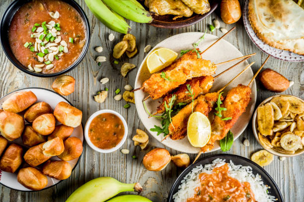

African Variety Food
There is a variety type of food in Africa you can find; rice, nsima, fish, meat, plantain, bread and the like.
Plantain is mostly found in west Africa, in countries like Nigeria and Ghana. In Ethiopia you will likely find rice and bread.
West African Food
Meat is commonly found in Kenya and South Africa where they are known in cattle animal farming
The theme of this website is to let the people know the main foods that are in Africa, in most particularly Malawi, so that, I may sale my country to the world for most people do not know about Malawi.